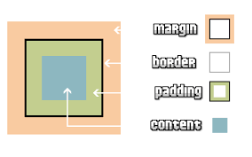

Manual Interactivo de CSS
Domina los fundamentos y construye tu primera página web estilizada.
Introducción a CSS
CSS (Cascading Style Sheets) es el lenguaje utilizado para definir el estilo y la presentación de documentos HTML. Permite controlar colores, fuentes, layouts, animaciones y mucho más, transformando estructuras HTML simples en experiencias visuales atractivas y funcionales.
En este manual, aprenderás los fundamentos de CSS paso a paso. Cada sección incluye teoría detallada, ejemplos prácticos y un proyecto final donde construirás una tarjeta de perfil estilizada, aplicando todos los conceptos aprendidos.
¿Qué es una tarjeta de perfil?
Una tarjeta de perfil es un componente común en sitios web que muestra información personal, como nombre, título, biografía, enlaces sociales y un botón de contacto, todo presentado de manera visualmente atractiva. Este será nuestro proyecto práctico.
Estructura HTML base de la tarjeta:
<div class="profile-card">
<img src="https://i.pravatar.cc/150?u=cssmanual" alt="Foto de Perfil" class="profile-pic">
<h3 class="profile-name">Tu Nombre Aquí</h3>
<p class="profile-title">Desarrollador Web</p>
<p class="profile-bio">Apasionado por la tecnología y el diseño. Siempre aprendiendo.</p>
<div class="profile-social-links">
<a href="#" aria-label="LinkedIn"><i class="fab fa-linkedin"></i></a>
<a href="#" aria-label="GitHub"><i class="fab fa-github"></i></a>
<a href="#" aria-label="Twitter"><i class="fab fa-twitter"></i></a>
</div>
<button class="profile-contact-btn">Contactar</button>
</div>
Objetivo: Aplicaremos estilos a esta estructura HTML en cada sección, culminando en una tarjeta de perfil completa en el proyecto final.
Sintaxis Básica de CSS
Una regla CSS está compuesta por un selector y un bloque de declaraciones. El selector indica qué elementos HTML se estilizarán, mientras que las declaraciones especifican las propiedades y sus valores.
Estructura de una regla CSS:
selector { propiedad: valor; }
- Selector: Identifica el elemento HTML (ej.
body,.clase,#id). - Propiedad: Define qué aspecto se modificará (ej.
color,font-size). - Valor: Especifica cómo se aplicará la propiedad (ej.
blue,16px).
Ejemplo aplicado a la tarjeta:
/* Estilo base para el cuerpo del documento */
body {
font-family: Arial, sans-serif; /* Define la fuente general */
margin: 0; /* Elimina márgenes por defecto */
background-color: #f4f4f4; /* Fondo gris claro */
}
/* Estilo inicial para la tarjeta de perfil */
.profile-card {
background-color: white; /* Fondo blanco para la tarjeta */
padding: 20px; /* Espacio interno */
}
Buenas prácticas:
- Usa comentarios para organizar tu CSS (
/* Esto es un comentario */). - Mantén los selectores específicos pero no overly-specific para evitar conflictos y facilitar el mantenimiento.
- Prefiere nombres de clases descriptivos y consistentes (ej.
.nombre-componente__elemento--modificadorcon BEM).
Selectores en CSS
Los selectores son la base de CSS, ya que determinan qué elementos HTML recibirán los estilos. Existen varios tipos de selectores, cada uno con un propósito específico.
Tipos de selectores comunes:
- Selector de elemento/tipo: Aplica estilos a todos los elementos de un tipo (ej.
p,h3,div). - Selector de clase: Aplica estilos a elementos con una clase específica (ej.
.profile-name). Es el más versátil y reutilizable. - Selector de ID: Aplica estilos a un único elemento con un ID específico (ej.
#miElementoUnico). Debe ser único por página. - Selector de atributo: Aplica estilos a elementos basados en sus atributos (ej.
input[type="text"],a[target="_blank"]). - Selector descendiente: Aplica estilos a elementos dentro de otro elemento (ej.
.profile-social-links a). - Selector de hijo directo: Aplica estilos a hijos directos de un elemento (ej.
ul > li). - Selector adyacente: Aplica estilos al elemento que sigue inmediatamente a otro (ej.
h2 + p). - Selector general de hermanos: Aplica estilos a todos los hermanos que siguen a un elemento (ej.
h2 ~ p). - Selector universal: Aplica estilos a todos los elementos (
*, usado con precaución, a menudo para resets). - Agrupación de selectores: Aplica los mismos estilos a múltiples selectores (ej.
h1, h2, h3 { color: navy; }).
Ejemplo aplicado a la tarjeta:
/* Selector de clase para el nombre */
.profile-name {
color: #333; /* Texto oscuro */
margin-top: 10px;
margin-bottom: 5px;
}
/* Selector de clase para el título */
.profile-title {
color: #777; /* Texto gris */
font-size: 0.9em;
margin-bottom: 15px;
}
/* Selector descendiente para los íconos dentro de los enlaces sociales */
.profile-social-links a i {
font-size: 1.2em; /* Tamaño de los íconos */
}
Nota: Los selectores de clase son ideales para la tarjeta de perfil porque permiten reutilizar estilos y mantener el código modular.
Especificidad en CSS
La especificidad determina qué regla CSS se aplica a un elemento cuando varias reglas podrían afectarlo. El navegador calcula un "peso" para cada selector; el de mayor peso gana.
Jerarquía de Especificidad (de mayor a menor):
- Estilos en línea (Inline styles): Atributo
styleen HTML (ej.). (Peso: 1,0,0,0) - Selectores de ID: (ej.
#miId). (Peso: 0,1,0,0) - Selectores de Clase, Atributo y Pseudo-clase: (ej.
.miClase,[type="text"],:hover). (Peso: 0,0,1,0) - Selectores de Tipo y Pseudo-elemento: (ej.
p,div,::before). (Peso: 0,0,0,1)
El selector universal (*) y los combinadores (+, >, ~, ' ') no añaden especificidad por sí mismos.
!important
La declaración !important anula cualquier otra declaración, sin importar la especificidad. Sin embargo, debe usarse con extrema precaución, ya que puede dificultar el mantenimiento del CSS. Es preferible lograr el resultado deseado ajustando la especificidad de los selectores.
Ejemplo de cálculo (conceptual):
body #content .mi-lista li.activo a:hover { /* Especificidad alta */
/* Cálculo (simplificado):
ID (#content): 1
Clases (.mi-lista, .activo): 2
Pseudo-clase (:hover): 1
Elementos (body, li, a): 3
Total aproximado: 0,1,3,3 (en formato ID, CLASES/ATTR/PSEUDO, ELEMENTOS/PSEUDO-ELEM)
*/
color: green;
}
li.activo a { /* Especificidad menor */
/* Cálculo (simplificado):
Clase (.activo): 1
Elementos (li, a): 2
Total aproximado: 0,0,1,2
*/
color: blue;
}
Consejo: Intenta mantener la especificidad lo más baja y consistente posible. Evita usar IDs para estilizar si no es estrictamente necesario y usa !important solo como último recurso.
Colores y Fondos
Los colores y fondos en CSS definen la apariencia visual de los elementos. Puedes usar nombres de colores, códigos HEX, RGB, RGBA, HSL, HSLA para personalizar texto, fondos y bordes.
Propiedades principales:
color: Define el color del texto.background-color: Define el color de fondo de un elemento.background-image: Permite usar imágenes como fondo (ej.url('imagen.jpg')).background-repeat: Controla si la imagen de fondo se repite.background-position: Define la posición inicial de la imagen de fondo.background-size: Define el tamaño de la imagen de fondo (ej.cover,contain).border: Propiedad abreviada para definir bordes (ej.1px solid #ccc). Incluyeborder-width,border-style, yborder-color.opacity: Define la opacidad de un elemento (de 0.0 a 1.0).
Ejemplo aplicado a la tarjeta:
.profile-card {
background-color: white; /* Fondo blanco */
border: 1px solid #ddd; /* Borde gris claro */
/* Podríamos añadir una imagen de fondo sutil: */
/* background-image: url('textura-sutil.png'); */
/* background-repeat: repeat; */
}
.profile-contact-btn {
background-color: #3498db; /* Azul brillante (HEX) */
color: white; /* Texto blanco (nombre de color) */
border: none;
padding: 10px 15px;
cursor: pointer;
}
/* Ejemplo con RGBA para un color con transparencia */
.profile-title {
color: rgba(0, 0, 0, 0.6); /* Negro con 60% de opacidad */
}
Consejo: Usa colores que contrasten bien para garantizar legibilidad (WCAG). Herramientas online pueden ayudarte a verificar el contraste.
Variables CSS (Custom Properties)
Las Variables CSS, también conocidas como Custom Properties, permiten definir valores reutilizables en tus hojas de estilo. Esto facilita la gestión de temas, la consistencia y los cambios globales.
Sintaxis:
- Definición: Se definen con un prefijo de dos guiones (
--) y son sensibles a mayúsculas/minúsculas. Generalmente se definen en el selector:rootpara que estén disponibles globalmente.:root { --color-primario: #3498db; --fuente-base: 16px; } - Uso: Se acceden usando la función
var()..elemento { color: var(--color-primario); font-size: var(--fuente-base); } - Valor por defecto (fallback):
var()puede tomar un segundo argumento como valor por defecto si la variable no está definida..elemento { color: var(--color-no-definido, black); }
Beneficios:
- Mantenibilidad: Cambia un valor en un solo lugar y se actualiza en todas partes.
- Legibilidad: Nombres descriptivos para valores (ej.
--color-texto-principalen lugar de#333). - Tematización: Facilita la creación de diferentes temas (ej. modo claro/oscuro) cambiando las variables.
- Cascada y Herencia: Las variables se heredan y pueden ser redefinidas en selectores más específicos.
Ejemplo aplicado a la tarjeta:
:root {
--card-bg-color: white;
--card-border-color: #ddd;
--card-text-color: #333;
--card-title-color: #777;
--button-bg-color: #3498db;
--button-text-color: white;
--profile-pic-border: #fff;
}
.profile-card {
background-color: var(--card-bg-color);
border: 1px solid var(--card-border-color);
color: var(--card-text-color);
/* ... otros estilos ... */
}
.profile-title {
color: var(--card-title-color);
}
.profile-contact-btn {
background-color: var(--button-bg-color);
color: var(--button-text-color);
}
.profile-pic {
border: 3px solid var(--profile-pic-border);
}
Nota: Las variables CSS pueden ser manipuladas con JavaScript, lo que abre posibilidades para interactividad y personalización dinámica por el usuario.
Modelo de Caja
El modelo de caja de CSS describe cómo se calcula el tamaño y espaciado de los elementos HTML. Cada elemento se considera una "caja" con las siguientes capas: contenido, padding, borde y margen.
Componentes del modelo de caja:
- a
- Contenido (Content): El área donde se muestra el texto, imágenes, etc. Sus dimensiones son
widthyheight. - Padding (Relleno): Espacio transparente interno entre el contenido y el borde.
- Border (Borde): Línea que rodea el padding. Tiene grosor, estilo y color.
- Margin (Margen): Espacio transparente externo alrededor del borde, que separa el elemento de otros.
box-sizing:
La propiedad box-sizing controla cómo se calcula el ancho y alto total del elemento:
content-box(valor por defecto):widthyheightse aplican solo al contenido. Padding y borde se añaden *adicionalmente* al tamaño total.border-box:widthyheightincluyen el contenido, el padding y el borde. Esto simplifica mucho los cálculos de layout, ya que si defineswidth: 100px;, el elemento (incluyendo su padding y borde) tendrá 100px de ancho.
Ejemplo aplicado a la tarjeta:
/* Es una buena práctica aplicar border-box globalmente */
html {
box-sizing: border-box;
}
*, *::before, *::after {
box-sizing: inherit; /* Hereda de html */
}
.profile-card {
width: 300px; /* Ancho total de la tarjeta será 300px */
margin: 50px auto; /* Centrado horizontal */
padding: 20px; /* Espacio interno, no afecta al width total de 300px */
border: 1px solid #ddd; /* Borde, no afecta al width total de 300px */
border-radius: 8px;
box-shadow: 0 4px 8px rgba(0,0,0,0.1);
text-align: center;
}
.profile-pic {
width: 100px;
height: 100px;
border-radius: 50%;
border: 3px solid #fff;
box-shadow: 0 2px 4px rgba(0,0,0,0.1);
margin-bottom: 15px;
/* width y height aquí sí se refieren al contenido de la imagen
si la imagen misma no tiene padding o borde intrínseco. */
}
Buena práctica: Muchos desarrolladores comienzan su CSS con la regla de box-sizing: border-box; mostrada arriba para un manejo de dimensiones más intuitivo.
Texto y Fuentes
Las propiedades de texto y fuentes en CSS permiten personalizar la tipografía, tamaño, peso, alineación y espaciado del texto, mejorando la legibilidad y estética.
Propiedades clave para fuentes:
font-family: Define la lista de fuentes (ej."Helvetica Neue", Arial, sans-serif). El navegador usará la primera que encuentre disponible.font-size: Define el tamaño del texto (ej.1.5em,16px,1rem).font-weight: Define el grosor de la fuente (ej.normal,bold,400,700).font-style: Define el estilo (ej.normal,italic,oblique).font-variant: Permite variantes comosmall-caps.@font-face: Para importar fuentes personalizadas.
Propiedades clave para texto:
color: (Ya visto) Color del texto.text-align: Alinea el texto horizontalmente (left,right,center,justify).line-height: Controla el espaciado vertical entre líneas de texto (ej.1.5,24px).letter-spacing: Espaciado entre caracteres.word-spacing: Espaciado entre palabras.text-decoration: Añade decoración (underline,overline,line-through,none).text-transform: Cambia mayúsculas/minúsculas (uppercase,lowercase,capitalize).text-shadow: Añade sombra al texto.
Ejemplo aplicado a la tarjeta:
body { /* Establecer una base para fuentes relativas */
font-family: 'Helvetica Neue', Arial, sans-serif;
font-size: 16px; /* Base para unidades rem */
line-height: 1.6;
}
.profile-card {
/* Hereda la fuente de body, pero podríamos especificar una diferente */
}
.profile-name {
font-size: 1.5rem; /* 1.5 * 16px = 24px */
font-weight: bold;
text-transform: capitalize;
letter-spacing: 0.5px;
}
.profile-bio {
font-size: 0.9rem; /* 0.9 * 16px = 14.4px */
color: #555;
line-height: 1.4; /* Relativo al font-size del propio elemento */
margin-bottom: 20px;
}
Consejo: Usa fuentes legibles y combinaciones de tamaños que mantengan una jerarquía visual clara. Considera usar unidades relativas como rem para font-size para mejor accesibilidad y escalabilidad.
Unidades en CSS
CSS ofrece diversas unidades para especificar longitudes, tamaños y otras magnitudes. Se dividen principalmente en absolutas y relativas.
Unidades Absolutas:
Son fijas y no cambian en relación a otros elementos o al viewport.
px(píxeles): La unidad más común. 1px es un punto en la pantalla. Útil para bordes o elementos que no deben escalar.- Otras (menos comunes para web):
pt(puntos),cm(centímetros),mm(milímetros),in(pulgadas).
Unidades Relativas:
Sus valores se calculan en base a otra propiedad o al tamaño del viewport.
%(porcentaje): Relativo al valor de la misma propiedad en el elemento padre (parawidth,height,padding,margin) o al tamaño de fuente del padre (parafont-size).em: Relativo alfont-sizedel elemento actual (si se usa parafont-size, es relativo al padre). 1em = tamaño de fuente actual.rem(root em): Relativo alfont-sizedel elemento raíz (). Muy útil para crear layouts escalables y accesibles.vw(viewport width): 1vw = 1% del ancho del viewport.vh(viewport height): 1vh = 1% de la altura del viewport.vmin: 1vmin = 1% de la dimensión más pequeña del viewport (ancho o alto).vmax: 1vmax = 1% de la dimensión más grande del viewport (ancho o alto).
Ejemplo aplicado a la tarjeta (y otros elementos):
html {
font-size: 16px; /* Base para unidades rem */
}
body {
font-size: 1rem; /* Equivale a 16px */
line-height: 1.5; /* Sin unidad, relativo al font-size del elemento */
}
.profile-card {
width: 90%; /* 90% del ancho de su contenedor padre */
max-width: 320px; /* Pero no más de 320px fijos */
padding: 1.25rem; /* 1.25 * 16px = 20px */
border: 1px solid #ccc; /* Borde de 1 pixel */
}
.profile-name {
font-size: 1.5rem; /* 1.5 * 16px = 24px */
}
.profile-pic {
width: 6.25rem; /* 6.25 * 16px = 100px */
height: 6.25rem;
margin-bottom: 1rem; /* 1 * 16px = 16px */
}
/* Para un banner que ocupe todo el ancho del viewport */
.full-width-banner {
width: 100vw;
height: 50vh; /* Ocupa la mitad de la altura del viewport */
}
Recomendación:
- Usa
remparafont-size,padding,marginywidth/heightde componentes para facilitar la escalabilidad global (accesibilidad). - Usa
pxpara bordes o cuando necesites precisión de píxel que no deba escalar. - Usa
%para layouts fluidos dentro de un contenedor. - Usa
vw/vhpara elementos que deban dimensionarse en relación al viewport (ej. héroes, modales a pantalla completa).
Propiedad Display
La propiedad display controla cómo se comporta un elemento en el flujo del documento, cómo interactúa con otros elementos y cómo se renderiza su caja.
Valores principales:
block: El elemento ocupa todo el ancho disponible en su contenedor y comienza en una nueva línea. Se le pueden aplicarwidth,height,margin(vertical y horizontal) ypadding. (Ej:,,-,).inline: El elemento ocupa solo el espacio necesario para su contenido y no comienza en una nueva línea. No se le pueden aplicarwidth,height, nimarginvertical directamente (margin-top,margin-bottom).paddingvertical puede tener efectos visuales inesperados. (Ej:,,imges un caso especial llamado "replaced inline element").inline-block: Combina características deinlineyblock. El elemento fluye con el texto (comoinline) pero se le pueden aplicarwidth,height,margin(vertical y horizontal) ypadding(comoblock).none: Oculta el elemento completamente. No ocupa espacio y no es accesible.flex: Convierte el elemento en un contenedor flexible, permitiendo usar Flexbox para sus hijos directos. (Ver sección Flexbox).grid: Convierte el elemento en un contenedor grid, permitiendo usar CSS Grid para sus hijos directos. (Ver sección CSS Grid).table,table-row,table-cell, etc.: Permiten que los elementos se comporten como estructuras de tabla HTML.Ejemplo aplicado a la tarjeta (y otros):
/* Por defecto,es 'block' */ .profile-card { display: block; /* (redundante aquí, pero para ilustrar) */ width: 300px; margin: 0 auto; /* Funciona porque es block */ } /* es 'inline' por defecto */ .profile-social-links a { display: inline-block; /* Permite márgenes y padding, y que estén en línea */ margin: 0 8px; padding: 5px; color: #3498db; font-size: 1.3em; } /* es 'inline' por defecto */ .highlight-text { display: inline; background-color: yellow; /* Afecta solo al texto */ } .hidden-element { display: none; /* El elemento no se mostrará ni ocupará espacio */ }Nota:
inline-blockes muy útil para elementos como botones, insignias o íconos que necesitan dimensiones y espaciado pero deben permanecer en el flujo del texto.Posicionamiento
La propiedad
position, junto con las propiedadestop,right,bottom,leftyz-index, controla cómo se posiciona un elemento en la página.Valores principales de
position:static: Es el valor por defecto. El elemento sigue el flujo normal del documento. Las propiedadestop,right,bottom,leftyz-indexno tienen efecto.relative: El elemento se posiciona relativo a su posición normal. Se puede desplazar usandotop,right,bottom,leftsin afectar la posición de otros elementos (el espacio original se conserva). Crea un nuevo contexto de apilamiento.absolute: El elemento se saca del flujo normal del documento. Se posiciona con respecto a su ancestro posicionado más cercano (un ancestro conpositiondiferente destatic). Si no hay ancestro posicionado, se posiciona con respecto al bloque contenedor inicial (usualmente). Otros elementos se comportan como si el elemento absoluto no existiera.fixed: Similar aabsolute, pero el elemento se posiciona con respecto a la ventana del navegador (viewport). No se mueve con el scroll. También se saca del flujo normal.sticky: Es un híbrido entrerelativeyfixed. El elemento se trata comorelativehasta que su bloque contenedor cruza un umbral especificado (ej.top: 0) durante el scroll, momento en el que se trata comofixed. Requiere al menos una propiedad de desplazamiento (top,right,bottom, oleft).
z-index:Controla el orden de apilamiento de los elementos posicionados (aquellos con
positiondiferente destatic). Un valor mayor dez-indexcoloca el elemento encima de otros con valor menor.Ejemplo (no aplicado directamente en la tarjeta final, pero ilustrativo):
.contenedor-padre { position: relative; /* Contexto para el hijo absoluto */ width: 300px; height: 200px; background-color: lightgray; } .elemento-absoluto { position: absolute; top: 20px; left: 20px; width: 100px; height: 50px; background-color: lightblue; z-index: 1; /* Por encima de otros elementos en el mismo contexto de apilamiento */ } .navegacion-fija { position: fixed; top: 0; left: 0; width: 100%; background-color: navy; color: white; padding: 10px; z-index: 1000; /* Muy alto para estar encima de todo */ } .encabezado-pegajoso { position: sticky; top: 0; /* Se pegará al borde superior del viewport al hacer scroll */ background-color: white; padding: 10px; z-index: 100; border-bottom: 1px solid #ccc; }Nota: En la tarjeta de perfil, usamos principalmente el flujo normal (
static). El posicionamiento es crucial para menús desplegables, modales, tooltips, barras de navegación fijas/pegajosas, y diseños más complejos.Flexbox (Flexible Box Layout)
Flexbox es un modelo de diseño unidimensional que ofrece una forma eficiente de distribuir, alinear y organizar el espacio entre ítems dentro de un contenedor, incluso cuando sus tamaños son desconocidos o dinámicos.
Conceptos Clave:
- Contenedor Flex (Flex Container): El elemento padre al que se aplica
display: flex;odisplay: inline-flex;. - Ítems Flex (Flex Items): Los hijos directos del contenedor flex.
- Eje Principal (Main Axis): La dirección primaria en la que se colocan los ítems flex. Por defecto es horizontal (
row). - Eje Secundario (Cross Axis): Perpendicular al eje principal. Por defecto es vertical.
Propiedades Comunes del Contenedor Flex:
display: flex;oinline-flex;flex-direction: Define la dirección del eje principal (row,row-reverse,column,column-reverse).justify-content: Alinea los ítems en el eje principal (flex-start,flex-end,center,space-between,space-around,space-evenly).align-items: Alinea los ítems en el eje secundario (stretch,flex-start,flex-end,center,baseline).flex-wrap: Controla si los ítems deben envolverse en múltiples líneas (nowrap,wrap,wrap-reverse).align-content: Alinea las líneas de ítems (cuando hayflex-wrap: wrap) en el eje secundario. Similar ajustify-contentpero para el eje secundario y múltiples líneas.gap,row-gap,column-gap: Define el espacio entre ítems flex.
Propiedades Comunes de los Ítems Flex:
order: Cambia el orden visual de los ítems.flex-grow: Factor de crecimiento si hay espacio extra.flex-shrink: Factor de encogimiento si no hay suficiente espacio.flex-basis: Tamaño inicial del ítem antes de distribuir el espacio.flex: Abreviatura paraflex-grow,flex-shrinkyflex-basis.align-self: Permite a un ítem individual anular elalign-itemsdel contenedor.
Ejemplo aplicado a la tarjeta:
.profile-social-links { display: flex; justify-content: center; /* Centra los íconos horizontalmente */ align-items: center; /* Centra verticalmente si los íconos tuvieran alturas diferentes */ gap: 15px; /* Espacio entre los enlaces */ margin-bottom: 20px; } .profile-social-links a { /* Los 'a' son ahora flex items. No necesitan display: inline-block aquí, flex lo maneja. */ } /* Otro ejemplo: un contenedor con un logo y un título */ .card-header { display: flex; align-items: center; /* Alinear verticalmente logo y título */ gap: 10px; } .card-header .logo { flex-shrink: 0; /* Evita que el logo se encoja */ } .card-header .title { flex-grow: 1; /* El título toma el espacio restante */ }Ventaja: Flexbox simplifica enormemente la creación de layouts complejos que antes requerían hacks o flotantes, especialmente para la alineación y distribución de espacio.
CSS Grid Layout
CSS Grid Layout es un sistema de diseño bidimensional basado en cuadrículas, diseñado para crear layouts complejos tanto para páginas enteras como para componentes de interfaz de usuario. Permite controlar filas y columnas simultáneamente.
Conceptos Clave:
- Contenedor Grid (Grid Container): El elemento al que se aplica
display: grid;odisplay: inline-grid;. - Ítems Grid (Grid Items): Los hijos directos del contenedor grid.
- Líneas de Grid (Grid Lines): Las líneas divisorias horizontales y verticales que forman la estructura de la cuadrícula.
- Pistas de Grid (Grid Tracks): El espacio entre dos líneas de grid adyacentes (columnas o filas).
- Celdas de Grid (Grid Cells): El espacio definido por la intersección de una fila y una columna.
- Áreas de Grid (Grid Areas): Un espacio rectangular que puede abarcar múltiples celdas, definido por cuatro líneas de grid.
Propiedades Comunes del Contenedor Grid:
display: grid;oinline-grid;grid-template-columns: Define las columnas de la cuadrícula (ej.1fr 1fr 1fr,100px auto 2fr,repeat(3, 1fr)).grid-template-rows: Define las filas de la cuadrícula (ej.auto 100px 2fr).grid-template-areas: Define áreas nombradas en la cuadrícula (ej."header header" "sidebar main").gap,row-gap,column-gap: Define el espacio entre las pistas de grid.justify-items: Alinea los ítems horizontalmente dentro de su celda (start,end,center,stretch).align-items: Alinea los ítems verticalmente dentro de su celda (start,end,center,stretch).justify-content: Distribuye el espacio de la cuadrícula si es más pequeña que el contenedor (similar a Flexbox).align-content: Distribuye el espacio de la cuadrícula si es más pequeña que el contenedor (similar a Flexbox).
Propiedades Comunes de los Ítems Grid:
grid-column-start,grid-column-end,grid-column: Definen en qué línea de columna empieza/termina el ítem, o cuántas columnas abarca.grid-row-start,grid-row-end,grid-row: Similar para filas.grid-area: Asigna un ítem a un área nombrada o define su posición y tamaño.justify-self: Alinea un ítem individual horizontalmente dentro de su celda.align-self: Alinea un ítem individual verticalmente dentro de su celda.
Ejemplo de Layout Básico (no aplicado a la tarjeta actual):
.grid-container { display: grid; grid-template-columns: repeat(auto-fit, minmax(200px, 1fr)); /* Columnas responsivas */ grid-template-rows: auto 1fr auto; /* Header, Main, Footer */ grid-template-areas: "header header header" "sidebar content content" "footer footer footer"; gap: 20px; min-height: 100vh; /* Para ocupar toda la altura de la pantalla */ padding: 20px; } .grid-item-header { grid-area: header; background-color: lightblue; } .grid-item-sidebar { grid-area: sidebar; background-color: lightgreen; } .grid-item-content { grid-area: content; background-color: lightcoral; } .grid-item-footer { grid-area: footer; background-color: lightgoldenrodyellow; } /* Para la tarjeta de perfil, si quisiéramos un layout interno más complejo: */ /* .profile-card-grid-internal { display: grid; grid-template-columns: 100px 1fr; // Columna para la imagen, otra para el texto grid-template-rows: auto auto 1fr auto; // Filas para nombre, título, bio, social/botón gap: 10px; align-items: start; // Alinear ítems al inicio de su celda verticalmente } .profile-pic { grid-row: 1 / span 3; } // Imagen ocupa 3 filas .profile-name { grid-column: 2; grid-row: 1; } .profile-title { grid-column: 2; grid-row: 2; } .profile-bio { grid-column: 2; grid-row: 3; } .profile-social-links { grid-column: 1 / -1; grid-row: 4; } // Ocupa todas las columnas en la fila 4 .profile-contact-btn { grid-column: 1 / -1; grid-row: 5; } */Uso: CSS Grid es ideal para layouts de página y estructuras complejas. Flexbox es excelente para componentes y distribución unidimensional. A menudo se usan juntos.
Pseudo-Clases y Pseudo-Elementos
Las pseudo-clases y pseudo-elementos permiten estilizar elementos en estados específicos o partes concretas de un elemento, añadiendo interactividad y detalles visuales sin necesidad de JavaScript o HTML adicional.
Pseudo-clases Comunes (
:selector):Seleccionan elementos basados en su estado o posición.
:hover: Aplica estilos cuando el cursor del mouse pasa por encima del elemento.:focus: Aplica estilos cuando un elemento (ej. input, botón, enlace) recibe el foco (al hacer clic o navegar con Tab).:active: Aplica estilos cuando un elemento está siendo activado (ej. un botón presionado).:visited: Aplica estilos a enlaces que ya han sido visitados. (Limitado por privacidad).:link: Aplica estilos a enlaces no visitados.:disabled: Selecciona elementos de formulario deshabilitados.:checked: Selecciona checkboxes o radio buttons marcados.:nth-child(n): Selecciona elementos según su posición entre hermanos (ej.:nth-child(2),:nth-child(odd),:nth-child(2n+1)).:first-child,:last-child: Selecciona el primer o último hijo.:not(selector): Selecciona elementos que NO coinciden con el selector interno.
Pseudo-elementos Comunes (
::selector):Permiten estilizar partes específicas de un elemento o insertar contenido.
::before: Inserta contenido generado antes del contenido real del elemento. Requiere la propiedadcontent.::after: Inserta contenido generado después del contenido real del elemento. Requiere la propiedadcontent.::first-letter: Estiliza la primera letra de un texto dentro de un elemento de bloque.::first-line: Estiliza la primera línea de un texto dentro de un elemento de bloque.::selection: Estiliza la parte del documento que ha sido resaltada (seleccionada) por el usuario.::placeholder: Estiliza el texto placeholder en campos de formulario.
Ejemplo aplicado a la tarjeta:
.profile-contact-btn:hover { background-color: #2980b9; /* Azul más oscuro al pasar el mouse */ box-shadow: 0 2px 5px rgba(0,0,0,0.2); } .profile-contact-btn:focus { outline: 2px solid #3498db; outline-offset: 2px; } .profile-social-links a:hover { color: #2c3e50; /* Color más oscuro */ transform: scale(1.1); /* Zoom sutil */ } /* Añadir un pequeño icono decorativo antes del nombre */ .profile-name::before { content: "👤 "; /* O un icono de FontAwesome: content: "\f007"; font-family: "Font Awesome 6 Free"; font-weight: 900; margin-right: 5px; */ /* color: var(--secondary-accent); */ } /* Estilizar la primera letra de la biografía */ .profile-bio::first-letter { font-size: 1.2em; font-weight: bold; color: #3498db; }Nota: La sintaxis con doble dos puntos (
::) es la estándar para pseudo-elementos en CSS3 para distinguirlos de las pseudo-clases, aunque los navegadores suelen soportar la sintaxis antigua de un solo dos puntos (:) por retrocompatibilidad.Transiciones
Las transiciones CSS permiten animar cambios en los valores de las propiedades CSS de manera suave y gradual a lo largo de un período de tiempo, mejorando la experiencia del usuario al interactuar con elementos.
Propiedades de Transición:
transition-property: Especifica la(s) propiedad(es) CSS a las que se aplicará la transición (ej.background-color,opacity,transform,all).transition-duration: Define el tiempo que durará la transición (ej.0.3s,300ms).transition-timing-function: Define la curva de aceleración de la transición (cómo progresa la animación en el tiempo). Valores comunes:ease(defecto): Inicio lento, luego rápido, final lento.linear: Velocidad constante.ease-in: Inicio lento.ease-out: Final lento.ease-in-out: Inicio y final lentos.cubic-bezier(n,n,n,n): Permite definir una curva personalizada.
transition-delay: Especifica un retraso antes de que comience la transición (ej.0.1s).
Sintaxis Abreviada (
transition):transition: [property] [duration] [timing-function] [delay];El orden no es estricto, pero se recomienda mantener uno consistente. La duración es obligatoria si se usa la forma abreviada.
Ejemplo aplicado a la tarjeta:
.profile-contact-btn { background-color: #3498db; color: white; /* Transición para el color de fondo y la sombra */ transition-property: background-color, box-shadow; transition-duration: 0.3s; transition-timing-function: ease-out; /* Forma abreviada: transition: background-color 0.3s ease-out, box-shadow 0.3s ease-out; O si todas las propiedades comparten la misma duración/timing: transition: all 0.3s ease-out; (menos performante si muchas propiedades cambian) */ } .profile-contact-btn:hover { background-color: #2980b9; box-shadow: 0 4px 10px rgba(0,0,0,0.25); } .profile-social-links a { color: #3498db; transform: scale(1); transition: color 0.2s ease, transform 0.2s ease; } .profile-social-links a:hover { color: #2c3e50; transform: scale(1.15); } .profile-pic { transform: scale(1) rotate(0deg); transition: transform 0.4s cubic-bezier(0.68, -0.55, 0.27, 1.55); /* Efecto 'rebote' */ } .profile-pic:hover { transform: scale(1.05) rotate(5deg); }Buena práctica: Usa transiciones en propiedades que no afecten el flujo del documento (layout) siempre que sea posible, como
transformyopacity, para un mejor rendimiento. Evita transicionar propiedades comowidth,height,margin, opaddingen elementos complejos si causa "reflows" costosos.Animaciones CSS
Las animaciones CSS, a diferencia de las transiciones, permiten crear secuencias de animación más complejas con múltiples pasos (keyframes). Son ideales para efectos visuales, indicadores de carga, o para dar vida a elementos de la interfaz.
Definición de Keyframes (
@keyframes):Se define una animación usando la regla
@keyframes, dándole un nombre y especificando los estilos en diferentes puntos de la secuencia (0% a 100%, ofrom/to).@keyframes nombre-animacion { 0% { /* o from */ opacity: 0; transform: translateY(20px); } 50% { opacity: 0.5; } 100% { /* o to */ opacity: 1; transform: translateY(0); } }Propiedades de Animación:
animation-name: El nombre de la animación definida con@keyframes.animation-duration: Duración de un ciclo de la animación.animation-timing-function: Curva de aceleración (similar a transiciones:ease,linear,cubic-bezier(), etc.).animation-delay: Retraso antes de que comience la animación.animation-iteration-count: Número de veces que se repetirá la animación (ej.3,infinite).animation-direction: Dirección de la animación en ciclos sucesivos (normal,reverse,alternate,alternate-reverse).animation-fill-mode: Define qué estilos se aplican antes de que comience la animación o después de que termine (none,forwards,backwards,both).animation-play-state: Permite pausar o reanudar la animación (running,paused).
Sintaxis Abreviada (
animation):animation: [name] [duration] [timing-function] [delay] [iteration-count] [direction] [fill-mode] [play-state];Ejemplo aplicado a la tarjeta (una animación de entrada sutil):
@keyframes fadeInCard { from { opacity: 0; transform: translateY(30px) scale(0.95); } to { opacity: 1; transform: translateY(0) scale(1); } } .profile-card { /* ... otros estilos de la tarjeta ... */ /* Aplicar la animación */ animation-name: fadeInCard; animation-duration: 0.7s; animation-timing-function: ease-out; animation-fill-mode: backwards; /* Aplica el estado 'from' antes de que empiece */ /* Forma abreviada: animation: fadeInCard 0.7s ease-out backwards; */ } /* Ejemplo de animación de carga para un botón */ @keyframes pulseBorder { 0% { box-shadow: 0 0 0 0px rgba(52, 152, 219, 0.7); } 70% { box-shadow: 0 0 0 10px rgba(52, 152, 219, 0); } 100% { box-shadow: 0 0 0 0px rgba(52, 152, 219, 0); } } .profile-contact-btn.loading { animation: pulseBorder 1.5s infinite cubic-bezier(0.215, 0.610, 0.355, 1); }Consideraciones:
- Las animaciones pueden ser más intensivas en recursos que las transiciones. Úsalas con prudencia.
- Al igual que con las transiciones, animar
transformyopacitysuele ser más performante. animation-fill-mode: forwards;es útil para que el elemento conserve los estilos del último keyframe una vez terminada la animación.
Diseño Responsive (Responsive Web Design - RWD)
El diseño web responsivo asegura que una página web se vea y funcione bien en una amplia variedad de dispositivos y tamaños de pantalla (desde teléfonos móviles hasta computadoras de escritorio). Se basa principalmente en layouts flexibles, imágenes flexibles y Media Queries.
Principios Clave:
- Layouts Flexibles (Fluid Grids): Usar unidades relativas como porcentajes (
%),vw,vh,rem,empara anchos, altos, márgenes y paddings, en lugar de unidades absolutas fijas como píxeles (px). Flexbox y CSS Grid son fundamentales aquí. - Imágenes Flexibles: Asegurar que las imágenes no excedan el ancho de su contenedor. Comúnmente se usa:
img { max-width: 100%; height: auto; } - Media Queries: Permiten aplicar diferentes estilos CSS basados en las características del dispositivo, como el ancho/alto del viewport, orientación, resolución, etc.
Media Queries:
Sintaxis:
@media [media-type] (condición) { /* estilos CSS aquí */ }media-type: Opcional (ej.screen,print,all). Si se omite, por defecto esall.condición: Una o más expresiones que evalúan características del medio (ej.max-width: 768px,min-width: 480px,orientation: landscape).- Ejemplo:
@media screen and (max-width: 480px) { /* Estilos para pantallas de 480px de ancho o menos */ }
Viewport Meta Tag:
Esencial para que el diseño responsivo funcione correctamente en móviles. Se añade en el
del HTML:width=device-width: Establece el ancho del viewport al ancho del dispositivo.initial-scale=1.0: Establece el nivel de zoom inicial cuando la página se carga por primera vez.
Ejemplo aplicado a la tarjeta:
/* Estilos base (Mobile First) */ .profile-card { width: 90%; /* Ocupa el 90% del a ncho en móviles */ max-width: 320px; /* Evita que sea demasiado ancha en pantallas más grandes si no hay otras reglas */ margin: 20px auto; padding: 15px; } .profile-name { font-size: 1.3rem; } .profile-pic { width: 80px; height: 80px; } /* Tabletas y pantallas pequeñas (ej. > 480px) */ @media (min-width: 481px) { .profile-card { padding: 20px; } .profile-name { font-size: 1.5rem; } .profile-pic { width: 100px; height: 100px; } } /* Escritorio (ej. > 769px) */ @media (min-width: 769px) { .profile-card { width: 350px; /* Un ancho fijo mayor para escritorio */ /* O podríamos usar un layout más complejo con Grid o Flexbox para varios cards */ } }Consejo "Mobile First": Es una estrategia popular diseñar primero para las pantallas más pequeñas (móviles) y luego usar media queries (con
min-width) para añadir complejidad y adaptar el diseño a pantallas más grandes. Esto tiende a resultar en un CSS más limpio y performante.¡A Practicar! Editor Interactivo
Modifica el CSS a continuación para estilizar la tarjeta de perfil. El HTML de la tarjeta es el mismo que se mostró en la introducción. ¡Intenta usar variables, unidades
remo incluso una pequeña animación!HTML (Base para tu CSS)
Tu CSS
Proyecto Final: Tarjeta de Perfil Completa
Combinando todo lo aprendido, aquí está la tarjeta de perfil con todos los estilos aplicados. Puedes ver el código HTML (el mismo de la introducción) y el CSS completo, que ahora incluye variables, unidades relativas y una sutil animación.
HTML de la Tarjeta
CSS Completo Aplicado